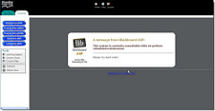

Elegir la mejor plataforma existente
La opción más simple sería pedirle a los profesores que usen la plataforma más completa que existe. En este momento es Blackboard
pues permite detectar copyright, crear foros, hablar con estudiantes via email, publicar tareas así como contenidos.
El problema que le vemos a esto es que muchos profesores encuentran a Blackboard muy dificil de usar, con una interfaz innesesariamente
complicada, y aun cuando es bastante completo, no cumple enteramente con sus necesidades como educadores, por lo que no accederían a usar sólamentre Blackboard.
Cómo dato adicional, se le pidió a algunos estudiantes que calificaran a Blackboard y en muchos casos se le criticó la interfaz tambien,
así como a su aplicación movil la cual dificilmente funciona y les pide "loggearse" constantemente. Concluimos que con esta solución el problema no se solucionaría completamente.
 By Uncle Su
By Uncle Su
No usar ninguna plataforma en lo absoluto
La otra solución que se nos ocurrió fué eliminar el uso de plataformas, sin embargo esto sólo beneficiaría parcialmente al alumno,
ya que aun cuando ya no tendría que preocuparse por revisar tareas en el portal así como estarse "loggeando", no sería productivo para el, además sería incompatible
con el modelo de enseñanza que está recibiendo dónde se integran las tecnologías para el aprendizaje.

By Shelby Steward